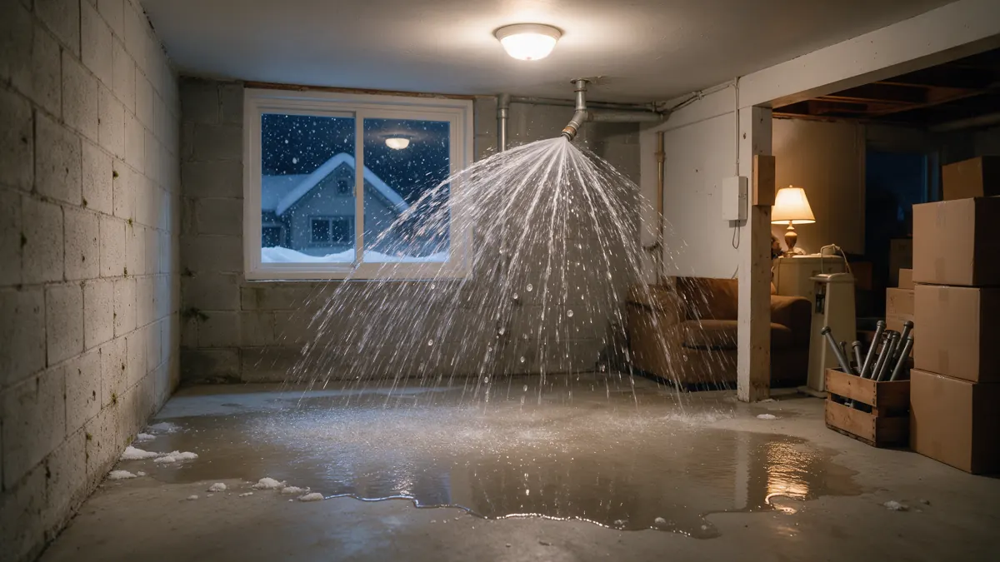

Plumbing Emergency Playbook for Colorado Homes

When a pipe bursts or a drain backs up, clear steps beat panic. This playbook for Colorado homeowners explains how to protect people and property, which shutoffs to use, and what to tell the plumber when you call. Plumbing Pros Colorado connects callers with independent local plumbers, so you can describe the situation once and be pointed toward someone who works in your area.
Start with safety, then water
Before touching a valve, check for hazards. If water is near outlets, a panel or a basement electrical box, stay out and cut power only if you can reach the breaker without standing in water. If you smell gas, leave the home and call the gas utility or 911 from outside.
Once the space is safe, close the main shutoff valve. For a single failing fixture, use the small stop valve under the sink or behind the toilet instead, which keeps the rest of the house running.
Know your three shutoffs
Every household should know the main water valve, the water heater supply valve and the fixture stops. Label them with tape. Tankless and tank units both have a cold supply valve that stops refilling during a leak.
- Main water valve location
- Water heater cold supply valve
- Washing machine hose valves
- Outdoor hose bib shutoff
- Breaker for the water heater
What to tell the plumber
Describe what you see in plain terms: where the water is, whether it is clear or dirty, whether you can stop it, and whether the house is occupied. Mention the home's age and pipe material if you know it, such as copper, PEX or galvanized steel.
Say which city you are in and whether access is easy. A clear picture helps the plumber arrive with suitable parts and tools.
If you rent, tell the landlord or property manager at the same time, because they may have preferred contacts or building shutoffs you cannot reach. Condominium and townhome owners should also check whether a shared riser serves their unit.
Cold-weather emergencies in Colorado
Hard freezes on the Front Range and in mountain towns can split pipes in garages, crawl spaces and exterior walls. Water freezes at 32°F, and the real damage often shows after thaw, when water pours out of the split.
If a pipe has frozen but not burst, open the faucet slightly and warm the area gently with a hair dryer. Never use an open flame. If you find a split, close the main valve first.
Limiting damage while you wait
Scoop or mop standing water, lift furniture onto blocks, and run fans if the electrical situation is safe. Take dated photos for any insurance conversation. Avoid using drains if a sewer backup is suspected.
After the call, you will be talking with an independent plumber, not an employee of ours. That plumber explains what is involved before work starts.
After the immediate danger has passed
Once water is stopped, make a short written list of what happened, what you shut off and what was damaged. Notes taken while events are fresh make later conversations with a plumber or an insurer simpler.
Check the ceiling below any burst pipe for bulging drywall, since trapped water can drop without warning. Poke a small relief hole only if you can do it safely, and keep clear of light fixtures. Keep the main valve closed until the plumber says the system can be refilled.
Frequently asked questions
When should I call 911 instead of a plumber?
Call 911 or the gas utility from outside if you smell gas, see sparks near water, or anyone is in danger. A plumber handles pipes and fixtures, but fire, electrical and gas hazards come first. Once the scene is safe, plumbing help can follow.
What if I cannot find my main shutoff?
Check near the water meter, in the basement or on the wall where the supply line enters. In some homes the valve is in a meter pit outside, which may need a special key. Tell the plumber so they can help you locate it.
Is a backed-up toilet an emergency?
It can be, especially if wastewater is rising in other fixtures or flowing into a basement. Stop using water, avoid flushing, and mention the pattern to the plumber. A single slow toilet is less urgent than a whole-house backup.
Does a burst pipe always mean repiping?
Not necessarily. Many failures are one split section that can be cut out and replaced. The plumber may recommend wider work if the pipe is brittle, corroded or has failed in several places.
Can I use my water heater after a flood?
If water reached burners, controls or wiring, leave it off until a plumber or technician checks it. Gas and electric units both need inspection after exposure to flooding.
Related plumbing services
Emergency Plumbing by city
- Water leak repair in Boulder
- Water leak repair in Arvada
- Water leak repair in Colorado Springs
- Water leak repair in Broomfield
- Water leak repair in Woodland Park
- Water leak repair in Westminster
Ready to talk to someone? Call (720) 794-0974 or visit what to do in a plumbing emergency.